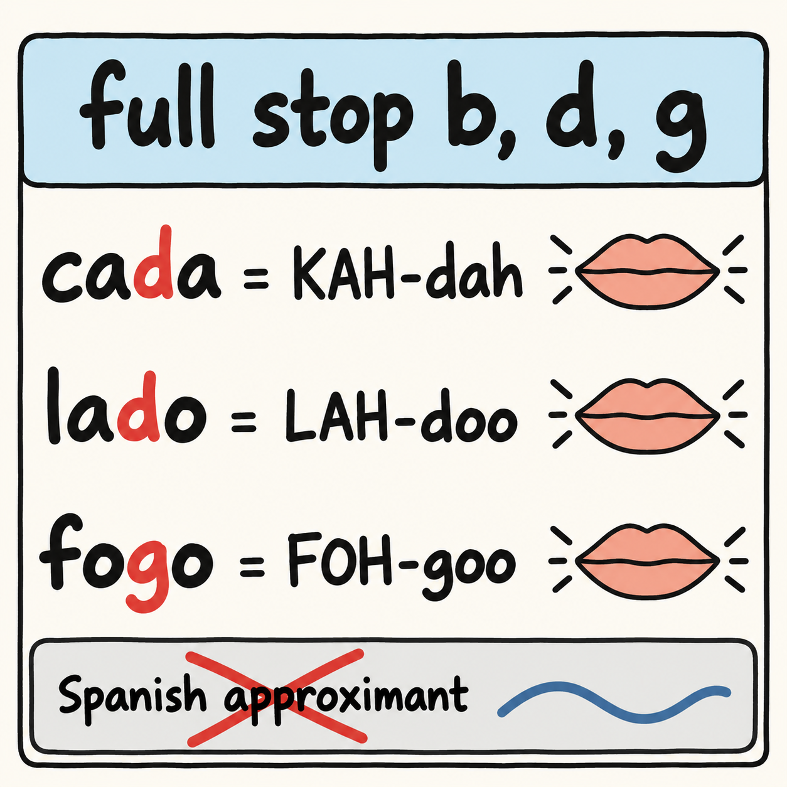

Many readers of this book speak English and Spanish. If that is you, you start Portuguese with a large advantage, and you also start with a hidden risk. The advantage is obvious the first time you read a Portuguese menu or a street sign. The risk is quieter: the Spanish you already own will answer for Portuguese before you have decided anything, and the result can harden into a mixed speech that is neither language.
The objective of this chapter is to reconfigure your Spanish base quickly instead of letting it fossilize early. The work is concentrated in three places: the sounds, where Spanish approximants stand in for full stops; the vowels, where Spanish-trained ears flatten contrasts Portuguese keeps; and the vocabulary, where words look identical and are not. Those are the English-speaker difficulties this chapter addresses, now seen from a reader who also brings Spanish.
A word on how to read the claims. The sources in this book study English-Spanish bilinguals learning Portuguese as a third language, so they speak directly to you. The sentences and respellings are the author's illustrations, and every practical suggestion is marked as the author's suggestion.
Start with the dependence itself. English-Spanish bilinguals depend on Spanish when learning Portuguese, whatever the order in which they acquired the two languages [F62]. It does not matter whether Spanish came first or English did. When Portuguese arrives as a third language, Spanish is the base the learner reaches for.
That sounds like good news, and partly it is. A related line of research tests a model in which the typological similarity of a language decides which one transfers, using adjective interpretation in learners with English as first language, Spanish as second and Brazilian Portuguese as third [F75]. For you, the practical reading, offered as the author's suggestion, is that the closeness between Spanish and Portuguese is real, and your mind will treat it as real.
The catch is documented too. Initial transfer from Spanish to Portuguese as a third language does not facilitate and requires reconfiguration [F76]. Put plainly, the first guess your Spanish makes is not a shortcut you can trust. It is a starting point that has to be adjusted. As the author's suggestion, treat every Spanish-shaped answer that comes to you in Portuguese as a hypothesis to check, not as a result.
It helps to separate two layers. The first layer is the words and structures that really are shared. You can use them from day one, and the book has pointed to many already. The second layer is the surface that only looks shared: sounds that feel the same and are not, words that are written the same and mean different things. This chapter is about the second layer, because that is where fossilization starts. The author's suggestion is to spend your first weeks on the second layer on purpose, since the first layer will take care of itself.

The best documented sound problem for your profile is specific. English-Spanish bilinguals produce voiced stops as Spanish-style approximants [F36]. In practice, between vowels the b, d and g of your Portuguese can come out soft and continuous, the way they do in Spanish, instead of closed. In Spanish that softening is correct. In Portuguese the closure is part of the sound.
The second documented risk is about time. Teaching materials for Spanish speakers who study Portuguese through readings point to the risk of early fossilization, with the mixed result usually called portunhol [F108]. Fossilization means that an error settles into a stable habit. The reason this matters for you is the one stated above: because Spanish answers so readily, the errors it produces feel natural, and a feeling of naturalness is what lets an error stay.
As the author's suggestion, make the fix early and make it small. A short daily drill on full stops, done in the first weeks, costs little and removes the first fossilizing habit before it sets. The drill plan below is built for exactly that.
None of this means that Spanish speakers are slow. The opposite is documented. An advanced-beginning Portuguese course for Spanish speakers reports that Spanish speakers advance very fast in Portuguese courses [F107]. The source does not give a number in the material used for this book, so no figure is claimed here.
Hold the two facts together, because they describe one situation. You will progress fast, and fast progress is exactly the condition under which an uncorrected habit spreads: the more you can say, the more you can say wrongly with confidence. The author's suggestion is to use the speed on purpose. Spend part of the time you save on the checks in this chapter, so that the large vocabulary you gain rests on sounds you have already corrected.
The third area is vocabulary. Earlier chapters met the false friends between English and Portuguese. For a Spanish speaker there is a second set, between Spanish and Portuguese, where a written word you recognize carries a different meaning, or a different register, on the Brazilian side.
The approach is the same as before, and it is the author's suggestion. When a Portuguese word looks exactly like a Spanish one, do not stop at the recognition. Ask whether the meaning you assumed has been checked in a Brazilian dictionary. Keep a short list of the words that failed that check, and review it with the spaced plan at the end of this chapter. The one item this book documents for the Spanish box, and only there, is described in the box itself.
The check is a habit of three steps, and it is the author's suggestion. First, notice the moment when a Portuguese word feels free because you already know it from Spanish. That feeling is the signal, not the proof. Second, look the word up in a Brazilian dictionary and read the meaning that is marked for Brazil, since some senses are marked for Portugal and some for informal use. Third, write the result on your short list in one line: the word, the Brazilian meaning and the Spanish meaning you had assumed.
The list should stay short. Five or six entries that you review carefully will do more for you than a long list you never open. When an entry stops tempting you, remove it, and keep the list as a record of what your Spanish base still gets wrong.
Because the upside and the risk grow together, a first month for a reader like you can be planned around three goals, again as the author's suggestion. The first goal is the closure of b, d and g between vowels, drilled a few minutes a day. The second goal is hearing the vowel pairs from Chapter 3, which means listening before producing. The third goal is the false-friend list, built from your own mistakes and not from a generic table.
Notice what the plan leaves out. It does not ask you to study the shared vocabulary, because you already have it, and it does not ask you to study grammar that Spanish hands you for free. It spends the first month on the thin layer that only looks shared. After that month, the drills fold into ordinary reading and speaking, and the list keeps growing slowly as real mistakes appear.
One last caution, in the same spirit. Do not treat a mixed sentence as a harmless stage you will outgrow. The documented risk is that the mixture settles [F108], and the author's suggestion is to notice the mixed sentence at once, say it again in Portuguese, and move on without drama.
This section turns the sound risk into a routine. Everything here is the author's suggestion, built on the documented fact that the approximant substitution exists [F36].
The target is simple to state: in Portuguese, produce b, d and g between vowels with a complete closure and a clean release, as you would at the start of a word. The routine is short.
The respellings are the author's illustrations of where the closure sits: KAH-dah, LAH-doo, FOH-goo. Keep the consonant hard in each one.
The second warning concerns vowels. A Spanish-trained ear has five vowels, and it tends to merge the pairs that Portuguese separates in stressed syllables, such as the closed and open o in avô and avó, or in pôde and pode. Chapter 3 treats those pairs in detail. The warning here is only that your Spanish base will hear a single vowel where Portuguese has two. As the author's suggestion, practice the pairs from Chapter 3 aloud, and listen for the difference before you try to produce it.
Put the two parts into one weekly routine, again as the author's suggestion. On three days, run the full-stop drill. On two days, run the vowel pairs. On the remaining days, read something short in Portuguese aloud and stop at every b, d and g between vowels to check the closure. The routine takes a few minutes, which is the point: the habit is small enough to survive a busy week.
Spend the most time on the sound that fossilizes first: the full b, d and g between vowels. It is documented, it is cheap to fix and it matters in every sentence you will say. Next, pay attention to the vowel pairs, since your Spanish base is least likely to flag them. Last, keep the short list of false friends between the two languages and review it on the spaced plan. Use the speed that Spanish gives you to cover these checks early, because the upside and the risk grow together.
Spanish is both support and trap. English-Spanish bilinguals depend on Spanish when learning Portuguese, whatever the order in which they acquired their languages [F62]. This whole chapter is that box in long form, and this section is its short, usable version: three traps, one vocabulary item and one sound drill.
The three traps most relevant to this chapter are the author's suggestions, not sourced claims.
Here is the vocabulary item this book documents for Spanish readers, and it appears only in this box. Propina means a bribe in informal Brazilian usage, according to the Priberam dictionary [F48]. A Spanish speaker who reads propina as the tip left at a restaurant is carrying the Spanish meaning into Brazilian Portuguese. The same dictionary entry records constipação with a sense marked as European Portuguese, with resfriado as the equivalent in Brazilian Portuguese, and a sense of constipation [F48]. As the author's suggestion, do not use propina for a restaurant tip in Brazil, and do not announce a cold with a word you have not checked.
Now the sound drill. English-Spanish bilinguals produce voiced stops as Spanish-style approximants [F36], so b, d and g can come out soft and continuous instead of closed. In Portuguese, produce them as real stops, with a complete closure and a clean release. Say these author's illustrations slowly and keep the consonant hard:
Put each word into a short phrase of your own, then say it again at conversational speed without letting the consonant soften. The dependence described above [F62] is the reason this drill is not optional polish.
Retrieving what you just read is what makes it stick: research comparing self-testing with rereading favors testing [F94]. Answer from memory first, then check the key.
Checking against the text is part of the work, not a failure [F94].
As the author's suggestion, here is a simple calendar for this chapter. Read it once today, then come back on these days:
On each return, run the self-test from memory before you reread anything, then reread only the parts you missed. These review points are the author's adaptation of the interval idea in a spacing study [F90], which measured a single gap between two study sessions. That source did not test this calendar, and the points above are a suggestion, not a result reported by that study. Adjust the timing to your own week if you need to; the habit of returning and retrieving matters more than the exact day.